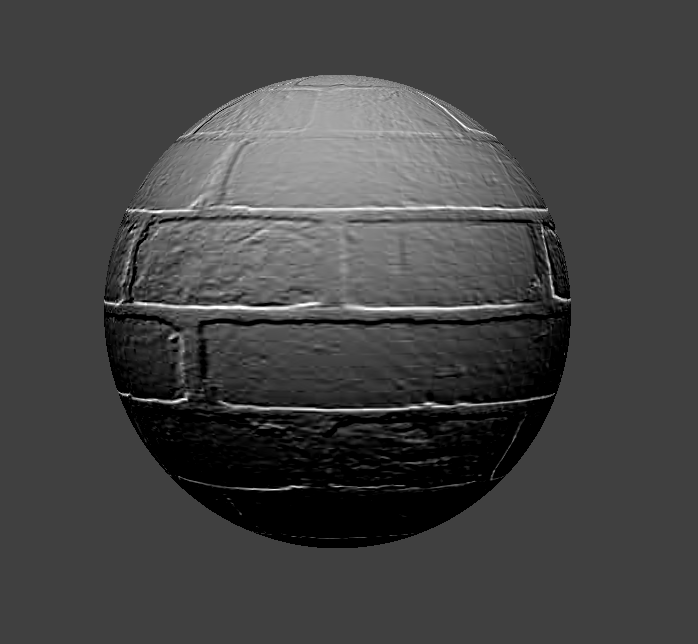

CS184: Computer Graphics & Imaging, Spring 2022
Assignment 4: Cloth Simulation
Ashley Chu (3034858776), Manaal Siddiqui (3034654585)
Project 4 Overview
Overview
Especially in 3D animated feature films and video games, simulating is essentially to ensure the viewer's experience feels immersive and real, even the small details. One way to dive deeper into how the real-world is simulated is by simulating cloth! In this project, we go through the steps of the process of representing and manipulating points to create realistic cloth. The environment around the cloth includes gravity, a floor, and objects to fall on top of. We ensure to account for instances of the cloth even falling upon itself.
The basics of this process begins by building a grid to represnt the cloth through PointMasses, datapoints that represent points within and along the cloth as well as constrain together to remain intact during different simulation tests. Then, we begin implementing basic simulations with verlet integration and calculating the impact of forces on the point masses. Additionally, we implemented deformation constraints in mass-spring models. From there, we needed to handle collisions between objects. We implemented this for spheres and planes. To do this, we adjust point mass positions if it exists "inside" the plane. From there, we implemented self-collisions in which we handle when an object falls on itself. Lastly, to bring cloth simulation together, we add shading to texture the objects. The textures we implement are diffuse shading, blinn-phong shading, texture mapping, displacement and bump mapping, and environment-mapped reflections.
Part 1: Masses & Springs
Pinned2.json Cloth Examples
Building the cloth
To begin the project, we start by creating a way to represent our cloth. We did this by creating a basic grid represented with PointMasses and Springs to simulate the different points within a cloth. The grid is evenly spaced based off of the height, width, and number of points to be used to represent the respective height and width. Depending on the orientation of the cloth, we also note the cloth's orientation.
Given an iterator of pinned PointMasses, we use two four loops to index to the respective height and width value within a vector that stores all the grid points. From there, we check which values are pinned. Using the pinned PointMass values, we add structural, shearing, and bending springs to build constraints to hold our grid together. These constraints help strengthen our cloth, so as the cloth deforms, it can still maintain its shape and uniformity.
|
Without any shearing constrains
|
Grid with shearing constraints only
|
|
Grid with shearing and bending constraints
|
Close-up angle of grid
|
Part 2: Simulation via Numerical Integration
Cloth motion is essentially a function of time and forces applied over time on a model of masses and springs. So, part 2 was focused on integrating motion to find forces on each of the point masses in the simulation to figure out their displacement at each time step delta_t . We must account for both external forces like gravity (which are uniform throughout the cloth) and spring correction forces which use spring constraints to hold the cloth together and vary across point masses and springs. The first part of the implementation was computing the external forces using Newton's 2nd law.
The external force is the same on all points, so we simply need to loop over all the external_accelerations, put them in the F = ma formula, and add that F computed to a summed force vector. Then, we iterate over the point_masses and initalize the forces instance variable with that external force computed.
The next part is a little bit more complicated. It involves applying spring correction forces, which hold the cloth together using the spring constraints provided.
We iterate over all springs. There are 3 different types of springs -- structural, shearing, and bending. Each has their respective constraints in the cloth parameters struct cp. As we iterate over springs, we check its type and check that their constraints are enabled. If they are, we can apply the below formula, where is the spring constant, are positions of the two masses on either end of the spring. and l is the rest length. We can get the positions from a spring s by accessing s.pm_a and s.pm_b which we then substract as per the equation. We normalize that vector, substract by the rest length and multiply that result by the spring constant. The spec guides us to add an additional weight of 0.2 to that magnitude if the spring type is bending. With that result, we find the magnitude of F and add it to one end of the spring (one of the mass positions) and substract from the other, as they should be, per Newton's laws, equal but opposite.
We've found all the forces acting on the point masses. These forces affect displacement and motion. Since they are functions of time we must integrate them to calculate the new positions of point masses using Verlet integration using the formula given below
d is given as the cp->damping value, x represents position, v represents velocity, a represents acceleration, and dt is a timestep. We iterate over the point masses and if they're not pinned, we can simply apply the formula. We can find xt by accessing pointMass.last_position, which we update iteratively with the current position, and then update the current position (pointMass.position) with the formula applied to the relevant values.
Finally, the last part of part 2 is to constrain the changes applied in positions that we just calculated. We don't want them to cause a change in length of more than 10% at any timestep. So, we again iterate over the springs, find the current length after the previous calculations by accessing spring.pm_b->position and calling norm() to get the Euclidean length. If the length exceeds 110% of the rest_length, we have to adjust using (1-1.1 * spring.rest_length/length). There are 3 different cases to account for. If both sides of the spring are pinned, then we then scale the correction by half and add to one end the scaled length, and substract from the other. If one is pinned, then we apply the scaling only on the other.
Part 2 Deliverables
- When we change the spring constant it affects the fabric itself -- a lower spring constant makes the fabric loose and stretchy in both motion and rest state. Higher spring constant makes it look stiffer. This makes sense because the spring constant in any setting is a measure of stiffness of the spring and differs for different springs and materials. The higher it is, the more difficult it is to stretch

ks = 5
|

ks = 100000
|

ks = 100000
|

ks = 5
|

ks = 1000000
|
- When we change the density without changing anything else, the cloth sinks differently. A lighter density exerts less force on the point masses so they don't sink as much. The cloth itself stretches a lot more when density is higher, since the force going down increases a lot more

density = 5
|

density = 100000
|
- When we change the damping constant without changing anything else, the cloth sinks and moves at different speeds, and the time it takes to get to a rest state changes. This is because the constant represents energy that is lost in oscillatory motion. When we changed to a low damping constant the cloth fell a lot faster and swung a lot more. No energy is lost when its 0, so it keeps swinging and swinging (I eventually stopped the simulation otherwise who knows how long it would've swang), compared to a high one which sank slower and smoother and reached a rest state quickly

damping = 0
|

damping = 1
|
Bugs we ran into
- At one point when we were testing our implementation simulation, the cloth was just falling endlessly into the void. We realized this was because in part 1 we didn't correctly handle pinned corners in defining the grid, so that behavior wasn't accounted for in part 2 when we calculate positions
Part 3: Handling Collisions
Now we need to account for collisions of the cloth with objects, namely spheres and planes. In other words, this part defined any updates made to point mass positions if it intersected with the object (whether plane or sphere) to make sure it doesn't go inside the sphere itself and remains on the surface of the cloth.
To implement it, we find where the point mass is relative to the sphere's surface based on its position minus the origin. If it's distance (found by .norm()'ing the aforementioned vector) is within the radius of the sphere, then that means it's inside the sphere and we need to change its position.
First, we need to find the point on the sphere's surface from the vector connecting the origin to the intersection point. As we can treat this like a ray, we simply find this by using the formula radius * direction (found with the unit vector representation of our ray) + origin.
We need to then correct the position to hit that point by substracting from it the previous position (to represent where the point mass should go next before it accidently collides into the sphere). So, we can update the pm.position to be that correction vector + the last position. Finally we scale it by a friction term before ending the function
For plane intersections the process is a little different.The logic is the same though -- we need to start by figuring out if the point mass intersected / collided with the plane by checking it if the last position is on a different side relative to the plane than pm.position is.We can do that by using the properties of normals -- if the dot product between our position relative to a point on the plane and a normal to the plane or our previous position and the plane is negative , we know to adjust the position.
We then find the point of intersection on the plane by projecting rhe point mass onto it with basic vector mathematics. Then we, like last time, find the correction vector by taking the vector between the intersection point and the last position and adjusting with the surface offset. We apply this to update pm.position and add the correction vector scaled with friction
Below are screenshots of collisions with spheres using various ks spring constants. Again, as in part 2 we can see a difference in stiffness which affects how the cloth spreads on top of the sphere. The lower the constant, the more flexible the cloth is -- it almost contorts around the sphere after falling. Because it’s more flexible, and can contort better around the sphere, it also pools and wrinkles a lot under the sphere. However, with a higher constant, the fabric is still and no longer flexible. Since it can't contort as well around the sphere when it collides with it, it spreads more outward and displays deep folds.

Sphere intersection with ks = 500
|

Sphere intersection with ks = 5000
|

Sphere intersection with ks = 50000
|
Below is also a screenshot of how the cloth collides with the plane and lies flat upon it with ks = 5000

Part 4: Self Collisions
One additional collision we haven't dealt with yet is self-collision. As the cloth falls due to gravity, the cloth may intersect itself as the cloth falls or "collides" on itself. Instead of having the cloth fall through itself, we want to prevent collsions and have the cloth spread out and look more realistic.
Previously, the cloth would fall onitself such as the image below:
Cloth falling on itself.
To prevent self collisions, we first need to be aware of collisions that occur. So, how can we track this? We start by constructing a spatial map in build_spatial_map() which hashes all the point masses based on location within the spatial map.
To do this, we need to create an initial hash function to map the values to respective location within the map to track which points may collide. Our hash works by using fmod to modulo the respective x, y, and z coordinates with w, h, and t respectively. From there, we multiply the second and third values by 10000 and 1000000000, so each x, y, and z coordinate have independent values allowing for a unique hash value.
Then, to account for actual collisions, we iterate through all the pointmasses' nearby points to check if there are any collisions. If so, we create a correction_vector for the candidate point that is colliding with the given pointMass to rescale where the pointmass position should be.
Below are a series of screenshots capturing the cloth from beginning to end as it falls.
|
Cloth begins to fall (start)
|
First self-collisions begin (middle)
|
Cloth settles on the ground (end)
|
To further explore self-collisions, we can play with the density and ks features to test how they affect our cloth. The first images below present the density of the cloth. As the density decreases, the cloth appears fairly firm and intact and collapses on itself in large bends. When the density increases alternatively, the cloth is much smoother and bends fairly easily, falling in small folds.
|
density=1
|
density=50
|
Meanwhile, the springiness of the cloth is controlled by ks. When ks is fairly larger, the cloth remains more rigid and is much stiffer. Alternatively, when the ks is smaller, the cloth bounces frequently and takes more bounces to reach a resting position. The smaller ks values resulted in less wrinkles in the cloth compared to higher ks values.
|
ks=1000
|
ks=7500
|
Bugs: The main bug we had faced was using the wrong pointers in this section. In build_spatial_map() we forgot to address the point mass correctly, causing incorrect calculations and checks for collisions.
Part 5 - Shaders
Shading
In this part, we implemented shaders with GLSL, which are programs that run computations on the GPU parallel with other parts of the rasterization pipeline like raytracing. We work with vertex shaders and fragment shaders. Vertex shaders are in charge of making geometric modifications of vertices (such as their position, normal vectors, etc), while fragment shaders take in the output of the vertex shader and process the resulting geometric properties of fragments to figure out an output color.
Diffuse Shading
This part we just needed to implement diffuse lighting which we can compute output values for using the below formula, where I is the light intensity, r is the distance between the point and the position of the light, n is the normal vector, and l is the light direction (found with normalizing the light position - v position). The rest follows.

Blinn Phong Shading
Blinn Phong allows us to create specular highlights and shading with ambient light and specfular reflection. It follows the formula below where the first term is ambient lighting, the second is diffuse lighting and the last is specular lighting
To implement the shader program we just computed the value of the output color based on the formula above. I is the light intensity, r is the distance between the point and the position of the light, h is the halfway vector between the light's direction and view vector. The light direction (l) can be found by normalizing the light position - v position; the view direction can similarly be found by normalizing the light position minus the camera position. N is the normal vector.
Note -- the other constants can be set as desired. We set ka * Ia = 0.4, kd = .5, ks = 0, and p = 3.
We can isolate these various components of the model, as seen below

Ambient only
|

Diffuse only
|

Specular Only
|

Complete model
|
Texture Mapping
In this part we add to our model a sample from a texture using the helper the starter code provided texture(sampler2D tex, vec2 uv) which samples from a texture tex at the texture space coordinate uv and then assign it to out_color
Here's a fun little custom texture of a sweet potato skin
Bump & Displacement Mapping
To extend mapping to areas further than purely color, we can use bump and displacement mapping to create realistic-looking models with simulations of 3D texturing. To do this, we can simply encode a height into the texture. In this process, we use diffuse shading along with our bump/displacement mapping to add additional dimension to the texture.
Bump Mapping
To implement bump mapping, we first begin by creating the tangent-bitangent-normal (TBN) matrtix to convert a vector into model space. We are already given the normal vector n and the tangent vector t, so all we have to do is compute the cross product of n and t (b=n x t) to then create TBN = [t b n]. Next, we calculate the difference in height along small changes of u or v (respectively) with dU and dV, using the following formulas below:
With h(u, v), we retrieve the height encoded within the height map – this works by sampling for the r component of the color texture store in the respective u, v coordinates of the texture.
Below are a few examples of bump mapping. The first image is shown with n=2, h=0.1 while the second image shown is with n=20, h=0.1. The last image is shown with the displacement map fallen on the sphere object.
Displacement Mapping
For displacement mapping, we take bump mapping to the next level by displacing the input vertex position to reflect the height map. Upon implementation, our vertex shader is now modified atop of the fragment shader. We used the following equation to modify the verticies:
Below are a few examples of displacement mapping. The first image is shown with n=2, h=0.1 while the second image shown is with n=20, h=0.1. The last image is shown with the displacement map fallen on the sphere object.

As seen between the images of both of these types of mappings, the bump map remains with a flat appearance despite having the height of the texture added into it. Meanwhile, the displacement mapping causes the verticies to visibly shift and add an extra dimension to it. To further compare bump and displacement mapping, we can take a look at the effects of coarseness on both. Both of the images shown below are taken with n=20, h=0.1.
|
Bump map -o 16 -a 16
|

Displacement map -o 16 -a 16
|
|
Bump map -o 128 -a 128
|
Displacement map -o 128 -a 128
|
As seen in both of these images, with lower coarseness, the less detail there is to the mapping. With the normal held constant for all test images at 20, the differences are extremeley visible. With a low coarseness of 16, the differences between the two mappings may be a bit more difficult to see; in the case of using the displacement map, we might as well use the bump map in replacement. However, with the higher coarseness of 128, the two differences are extremely clear and more exact and accurate on the representation.
Environment Mapping/Mirroring
Finally, our last shader is the environment-mapped reflection or "mirror" shader. This shader works by samping the incoming radiance with the environment map. To implement the environment-mapped reflections, we simply calculated the incoming direction by reflecting the eye vector over the surface normal.
Reflection & Collaboration
To complete this project, we worked fairly asynchronously as our schedules this month conflicted due to religious holidays and other events.
Ashley primarily worked on Parts 1, 4, and Shaders 5.4 and 5.5. Meanwhile, Manaal worked heavily on Parts 2, 3, and 5.1 through 5.3. Throughout this project, we consulted one another when we were stuck with any bugs and also attended office hours often. In terms of the writeup, we wrote summaries for our respective parts.
Along the way, the majority of our bugs were caused by pointer bugs (using
Project 4 Webpage
You can view this website at: https://ashchu.github.io/cs184-project4